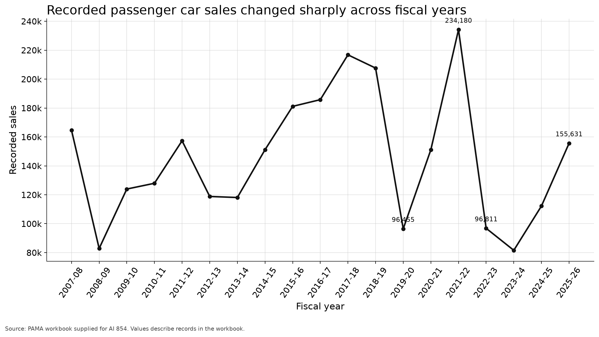
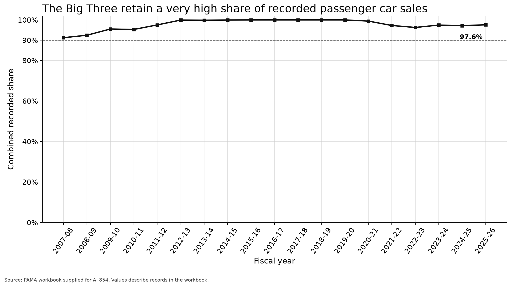
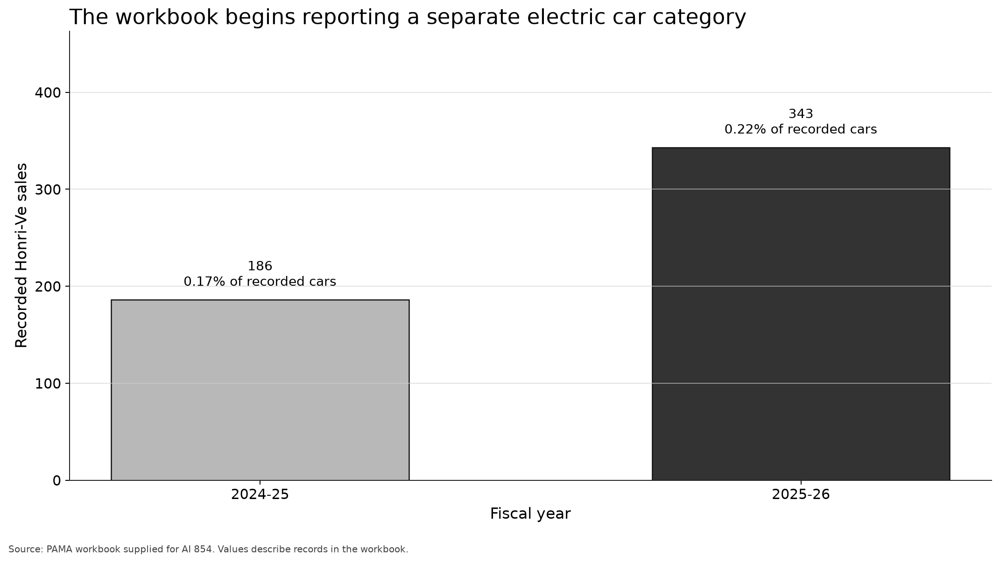

Use this page on a phone, project it for the whole class, or print one grayscale copy per group.
New and electric vehicle brands are breaking the dominance of Pakistan's traditional Big Three.
Choose: Supported, Not supported, or Cannot be answered adequately.



| Fiscal year | Total recorded passenger car sales | Big Three recorded share | Recorded electric car sales |
|---|---|---|---|
| 2007 to 2008 | 164,650 | 91.2% | Not separately reported |
| 2015 to 2016 | 181,145 | approximately 100% | Not separately reported |
| 2021 to 2022 | 234,180 | 97.3% | Not separately reported |
| 2022 to 2023 | 96,811 | 96.3% | Not separately reported |
| 2024 to 2025 | 112,203 | 97.2% | 186 |
| 2025 to 2026 | 155,631 | 97.6% | 343 |
Coverage note: The PAMA workbook reports named manufacturers and vehicle categories. It may not include every imported vehicle, nonmember manufacturer, new entrant, or government registration.
Source: https://pama.org.pk/monthly-production-sales-of-vehicles/
1. Position
2. Strongest supporting observation and denominator
3. Most important limitation
4. One additional data source
5. Final conclusion in no more than two sentences
Roles: Analyst ________ Skeptic ________ Spokesperson ________